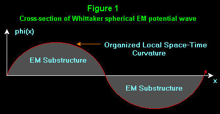
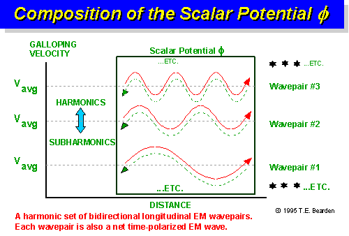
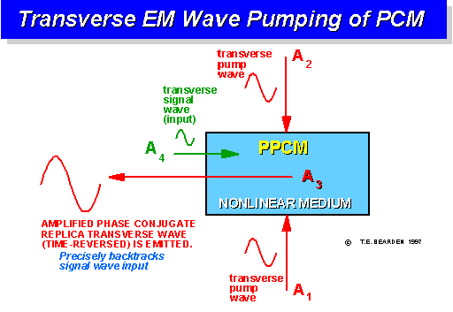
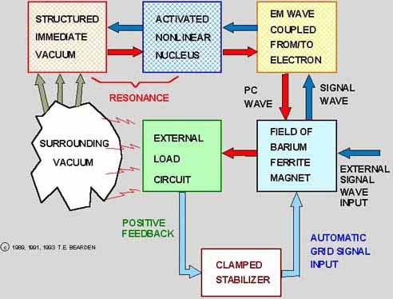
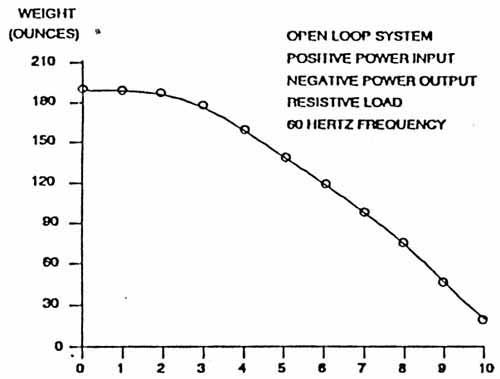

|
Utilizing Scalar Electromagnetics To Tap
Vacuum Energy
Floyd Sweet, Association of Distinguished American
Scientists
2311 Big Cove Road, Huntsville, Alabama 358010
T. E. Bearden,
Association of Distinguished American Scientists
2311 Big Cove Road, Huntsville, Alabama 35801
(Also published in: Proceedings of the 26th Intersociety
Energy Conversion Engineering Conference (IECEC Conf),
August 4-9, 1991, Boston, Massachusetts. Vol 4, Advanced Energy Concepts,
pp. 370-375.)
Copyright © 1991 by T.E. Bearden & F. Sweet. All Rights
Reserved.
ABSTRACT
Based on E.T. Whittaker's previously unnoticed 1903-1904 papers which
established a hidden bidirectional EM wave structure in a standing
forcefield free scalar potential, a method of directly engineering the
ambient potential of the vacuum has been developed and realized
experimentally.
Adding Whittaker's engineerable hidden variable theory to classical
electro-magnetics, quantum mechanics, and general relativity produces
supersets of each discipline. These supersets are joined by the common
Whittaker subset, producing a unified field theory that is engineerable
and tested.
By treating the nucleus of the atom as a pumped phase conjugate
mirror, several working model energy units have been produced which
excite and organize the local vacuum, increase the local virtual photon
flux between local vacuum and nucleus, establish coherent
self-oscillations between the local excited vacuum and the affected
nuclei, utilize the self-oscillating standing wave for self-pumping of
the nuclei/mirrors, introduce a very tiny signal wave to the mirrors,
and output into an external load circuit a powerful, amplified,
time-reversed phase conjugate replica wave at 60 Hertz frequency and
nominal 120 volt sine wave power.
Several models have been built, ranging from 6 watts early on to one
of 5 kilowatts. Both closed batteryless systems with damped positive
feedback and open loop systems with battery-powered input have been
successfully built. Open loop power gains of from 5 x 104 to
1.5 x 106 have been achieved.
Antigravity experiments have also been successfully conducted where
the weight of the unit was reduced by 90% in controlled experiments,
with a signal wave input of 175 microwatts and an output of 1 kilowatt.
The basic theory of the device is briefly explained and experimental
results presented. In the demonstration session, a videotape of one
operating open-loop unit with a 1.5 x 106 power gain is
planned, as is the demonstration of an actual working model closed-loop
system with a nominal rating of 500 watts, and without external power
input of any kind.
The units are solid state, with no moving parts. Each of them
comprises a unique form of self-powered vacuum triode of extraordinary
gain, where the cathode power and plate power are freely furnished by
the vacuum, and only a small grid signal need be furnished either from
an external power source or by clamped positive feedback from the
device's output. The output is negative energy, and some of its unique
characteristics are pointed out.
Implications of the experimental application of the Sweet vacuum
triode, the Bearden approach to the nucleus as a pumped phase conjugate
mirror, and the unified field theory based on Whittaker's engineerable
hidden variable scalar EM potential theory are also briefly addressed.
SCALAR ELECTROMAGNETICS
In 1837 Sir W.R. Hamilton said,
"The notion of time may be unfolded into an independent pure
science... a science of pure time is possible."
As is well-known, the fundamental units utilized in physics are
arbitrary. It is even possible to construct all of physics on a single
unit, time. This oddity shows the truth in Hamilton's statement; it is
even more odd, because quantum mechanically time is not an observable.
This means that the observable world can be modeled completely in terms
of the nonobservable, which is essentially what modern quantum mechanics
is now doing.
Hamilton viewed his magnificent quaternions as essentially having
accomplished the mathematical structuring of time. Maxwell's original EM
theory, as is well-known, was modeled in Hamilton's quaternions, not in
the highly curtailed Heaviside/Hertz vectors erroneously taught today as
"Maxwell's theory."
Not a single one of the present so-called "Maxwell's" vector
equations ever appeared in a book or paper by James Clerk Maxwell.
For some years the author has worked on an extended electromagnetics
theory, involving the scalar component of the quaternion. [Ref.
1]
In Maxwell's original quaternion theory, this scalar component often
remains when the directional components zero. Further, it then enfolds
vectors and functions of vectors inside, in a hidden variable manner.
Specifically, the author has patterned a unified field theory concept
upon the previously unnoticed but remarkable early work of E.T.
Whittaker. [Ref. 2]
In two fundamental papers in 1903 and 1904, Whittaker showed that all
present vector EM can be replaced by scalar potential interferometry,
and that bidirectional harmonic EM plane wave sets could be used to
produce a standing wave of force-field-free potential (Figures 1 and 2).

NOTE: SHAPE MAY BE ALL ABOVE OR ALL BELOW
AMBIENT VACUUM POTENTIAL
Thus Whittaker anticipated the quantum mechanical Aharonov/Bohm
effect by 55 years, including extending it to the macroscopic world
instead of the mesoscopic realm where it has been established to date. [Ref.
3]
In modern terms, Whittaker showed how to turn EM wave energy into
electrogravitational potential energy, then how to interfere two such
scalar potential waves to recover electromagnetic energy, even at a
distance. [Ref. 4]
This unrecognized work is of great importance: when applied to modern
physics, it produces supersets of quantum mechanics (QM), classical
electromagnetics (EM), and general relativity (GR).
Further, all three extended disciplines unify on their common
Whittaker subset, in a testable and engineerable fashion. [Ref.
5]

Figure 2. Infolded EM plane wave structure of a Whittaker wave.
The Nucleus As a PPCM and Triode
The author has also considered the highly nonlinear nucleus of the
atom as a pumped phase conjugate mirror (PPCM), having found no other
consideration of same in the literature.
The author also dubbed a PPCM a "triode," since the amplified phase
conjugate replica of the signal wave is much like the amplified output
of a triode, and the signal wave input to a PPCM is much like a triode's
grid signal input. The PPCM pump wave then corresponds roughly to the
power input to the cathode and plate of a triode. [Ref.
6]

Figure 3. A pumped phase conjugate mirror.
VACUUM TRIODE BACKGROUND
About seven years ago, the author was privileged to see and examine
an invention of Mr. Floyd Sweet, that produced about 6 watts of
electrical power from the vacuum itself.
This remarkable device, which the author dubbed a vacuum triode, in a
single unit utilized most of the scalar EM concepts the author had so
painfully and slowly formulated over the years.
Sweet, a brilliant inventor with a remarkable knowledge of magnetics,
had utilized barium ferrite magnets and special coils to produce a
solid-state device that successfully tapped the vacuum energy.
The author quickly put together a theoretical concept for the
energy-tapping mechanism, based on treatment of the nucleus as a PPCM
and Whittaker's scalar EM potential unified field theory. [Ref.
7]
The author furnished the technical concept, treating the nucleus as a
pumped phase conjugate mirror, to the inventor along with copies of
Whittaker's papers.
Sweet's Synthesis and Extension
Sweet is also a brilliant EM theoretician, working in four, five, or
even six dimensions with ease. He immediately synthesized the entire
PPCM and Whittaker theory, and developed a complete theoretical
treatment of the device. [Ref. 8]
He also increased the nuclear potential utilized in the activated
nuclei of the device, which increased the pumping energy and hence the
energy output. He next produced an open-loop vacuum triode (VT) with an
output of 500 watts, for an input of 33 microwatts.
Thereafter he produced several other models, including closed-loop
systems and one with 5-KW output.
Purpose of This Paper
Our purpose is to explain the detailed scalar EM concept of the
operation of the vacuum triode, since it is a universal method for
cohering and tapping useful EM energy from the vacuum.
The author believes that this mechanism is the fundamental mechanism
that must be invoked in any over-unity device that electromagnetically
extracts vacuum energy as electromagnetic effects.
We also intend to demonstrate a full working model of the device at
this conference. Sweet's detailed theoretical treatment will be
completed and submitted to a major journal shortly, to complete the
scientific exposition of the new methodology.
I must also express my deep admiration for my brilliant inventor
colleague. It has been a privilege to work with him, though under great
difficulties and at a distance. He has developed several other related
devices that are of great importance to the emerging new physics of
vacuum engineering, in the sense referred to by Lee. [Ref.
9]
To mention just one, he has produced a magnetic lens which apparently
can directly display the vacuum's virtual particle flux, or a good
analog of it. So far as I am aware, this is the only extant instrument
today that can perform this feat.
When the vacuum triode has been proven to the scientific community,
it is my intention to nominate Sweet for the Nobel Prize he so richly
deserves, and seek high scientific endorsements for the recommendation.
INTRODUCTION
Entropy
As is well known, in any closed dynamic system the order existing in
it will gradually be dissipated, as more and more interactions occur.
This leads to the notion of entropy as the increasing disorder in such
systems. The assumptions are
-
a closed system, and
-
a positive flow of time for the components of the system.
Actually no such thing as a completely closed system exists in
nature. Every mass system is open to virtual particle flux exchange with
the vacuum, for example, particularly in the nucleus of its atoms, where
the bulk of its mass is located.
However, the closed system assumption is reasonably approximated by a
great many systems which are in stable thermodynamic equilibrium, or
nearly so.
On the other hand, in an open system far from thermodynamic
equilibrium, the second law of thermodynamics does not necessarily
apply, because the system violates both the closed system assumption and
its equilibrium approximation. [Ref. 10]
Time Reversal
Since being discovered in 1972 in the open Soviet literature, the
time-reversed (phase conjugate) EM wave has also been known. The phase
conjugate EM wave is truly time-reversed, as has been shown
experimentally. Since the time-reversed EM wave violates the second
major assumption, the second law of thermodynamics need not necessarily
hold for time-reversed entities.
Putting all this together, if one wishes negentropy and hence
increased energy in a system, the candidate suggested would appear to be
a system that was strongly
-
open loop,
-
time-reversed, and
-
far from thermodynamic equilibrium.
A good overview of time-reversal in physics has been provided by
Sachs. [Ref. 11]
Engineering the Nucleus
Since the nucleus already provides a myriad of time-reversed
processes, engineering the nucleus of an atom is a very good candidate
for practical negentropy.
To engineer the nucleus directly, a Whittaker potential is first
artificially constructed, by composing a harmonic set of phase-locked EM
wave/antiwave pairs. It is accented that the antiwaves must be true
phase conjugates; otherwise they will not constitute a gradient-free
Whittaker standing potential wave.
In addition, at least one harmonic interval must be used, and
additional harmonic sets are most desirable. The reason is that a
space-time lattice must be formed in the vacuum, where the energy is
additive spatially but oppositive in t-dot, the rate of flow of time, in
the fourth dimension.
So a time-structure is required as well as a spatial structure, which
is what is provided by n bidirectional harmonic Whittaker
EM wave sets, where n is an integer greater than 1.
Once a specific Whittaker structure has been chosen, the local
lattice of space-time is established. This establishes phase-locked
lattice groupings of coupled photon/antiphoton pairs, or of gravitons.
In turn, this Whittaker-structured vacuum now contains specific graviton
vacuum engines, which directly engineer and structure the vacuum's
virtual particle flux (VPF) exchange with the nucleus. [Ref.
12]
The nucleus is highly nonlinear, hence strongly phase conjugative, or
time-reversed. The ambient potential of the local vacuum surrounding the
nucleus is in a violent virtual photon exchange with it, accounting for
its electrical charge.
Since the preponderant charge is positive, from the viewpoint of the
ordinary light observer whose light interacts with electron shells, the
nucleus may be taken to exhibit time reversal (phase conjugation).
Energy, Time, and Gravitons
We take the definition of "energy" to be fundamentally an ordering
imposed upon the VPF of vacuum. We take photon scattering from the
electron shells of atoms to be the fundamental exterior mechanism
producing forward flow of external observer time.
It then follows that "time's arrow" for the EM observer is due to the
universal scattering of photons from electron shells.
In this view, forward (positive) time flow and entropy are due to the
same primary action: photon scattering from electron shells. It is
unfortunate that the concept of "positive" energy has been tied to, and
defined in terms of, the scattering and dissipation of VPF order as
work, or energy expended.
Via the standard labeling, then, negative energy is the
reconstitution of order in the vacuum VPF. It should be noted that, in a
PPCM, dissipative or external pump wave stress energy can be scavenged
and re-emitted in perfect order as the phase conjugate replica. This is
a negentropic process, for it is capable of turning disorder into order.
[Ref. 13]
In the time-reversed PPCM nucleus, we should expect to see
appreciable negative energy—that is, energy removed from the EM
scattering domain. This includes the binding energy of the nucleus, and
the gravitational (G) potential energy of the EM energy removed from the
"scattering interaction realm" and locked into the mass.
Following Sakharov, we hold that the G-field is not a fundamental
field of nature, but a composite caused by, or made from, other fields.
[Ref. 14]
To the first order, we assume the G-potential is comprised of coupled
photon/antiphoton pairs, on the average, where the statistical coupled
spin-2 photon/antiphoton pair is a graviton. [Ref. 15]
We follow the modern view of the field: because of vacuum
fluctuations, rigorously one no longer speaks of "the" field, but of the
probability of a particular field configuration. [Ref.
16]
We also hold the vacuum to be composed of potentials, and regard the
three terms space-time, vacuum, and scalar potential as essentially
synonymous.
Newton's Third Law and the Detection
Process
The VPF EM stress of the local vacuum immediately surrounding the
nucleus may be decomposed a la Whittaker into opposing bidirectional EM
plane waves/forces. Thus the nonlinear nucleus may be regarded as a
pumped phase conjugate mirror, normally with a gain of one.
In this view, Newton's third law reaction force is generated because
the so-called "photon" interaction with an atom is in fact a graviton
reaction involving a photon/antiphoton pair that is decoupled.
The decoupled photon normally is absorbed and reradiated by an
orbital electron, while the decoupled antiphoton interacts with the
nucleus, producing a time-reversed twin of the external force—or, in
other words, Newton's third law reaction force, which gives a slight
recoil of the nucleus.
Half of every measurement physicists normally make is discarded, with
the missing half accounting only for Newtonian reaction in the meter or
instrument, which is usually ignored.
The fact that half of our measurement interactions are ignored is
occasionally discovered and noted by physicists, who may even write a
paper pointing it out, but no change is instituted in the foundations. [Ref.
17 and Ref 18]
Semiconducting Vacuum and
Self-Oscillation
The vacuum immediately surrounding the nucleus is structured by the
nucleus, and is itself nonlinear and capable of acting as a
semiconductor. [Ref. 19]
Since both this immediately local semiconductor vacuum and the
nucleus it surrounds are highly nonlinear, then nonlinear resonance can
conceivably be established between them.
Further, since the resonating system in such case is an open system
away from thermodynamic equilibrium, the oscillation can be
self-sustaining. Such self-oscillation of the pumping of a PCM is
already well-known in the nonlinear optical literature, particularly
with compounds containing barium. [Ref. 20]
THE VACUUM TRIODE
The Basic Concept
As is well-known, a stress can be decomposed into opposing sets of
forces. But quantum mechanically, the forces we are interested in with
our work here are all caused electromagnetically, by the exchange of
virtual photons. Even mechanical force, according to QM, is caused in
this manner. Thus opposing electromagnetic or mechanical "stress" sets
of bidirectional EM forces are microscopically equivalent to the notion
of pump waves in nonlinear optics.
Hence under the proper conditions, it follows that trapped EM stress
energy of the vacuum can be utilized to "pump" the nucleus.
Treating the stress-pumped nonlinear nucleus as a PPCM, it follows
that the stress energy of the vacuum can be tapped by a 4-wave mixing
mechanism in the atomic nucleus, to provide amplified phase conjugate EM
wave outputs from the atom in response to small signal wave inputs. [Ref.
21]
In the proper nonlinear material, the material may act as a PPCM, in
which case there exists a suitable connection between the material's
atomic nuclei and its external electromagnetic lattice bonds, and the
amplified phase conjugate replica wave generated in the nucleus will be
emitted from the material as an EM wave field. This field can then be
tapped by suitable means and output to an external load circuit.
Block Diagram of the Vacuum Triode
Figure 4 shows a basic block diagram of the vacuum triode process,
utilized by Sweet in several laboratory vacuum energy devices. These
devices have ranged from a nominal 500 watt output in a 6-lb. device to
5 kilowatts for a heavier unit. Gains have ranged from 50,000 to
1,500,000 for open-loop systems. Both open-loop and closed-loop systems
have been built and tested.
Figure 4 shows a combined block diagram for either a closed-loop or
open-loop system. In the open-loop system, a barium ferrite magnetic
material is used as a pumped phase conjugate mirror.
In the "standard" design, two opposing PPCMs are used. The advantage
of this dual combination is the use of self-targeting (repetitive phase
conjugation, signal by signal). This has the effect of
-
stabilizing the Whittaker field, and
-
producing a quantum potential between the two mirrors, so the
mirrors and the Whittaker potential between them are essentially one
single space-time entity.
Discussion of a quantum potential is beyond the scope of this paper,
but the technical mechanism for creating one has been previously
presented by the author on several occasions. [Ref. 22]
First we will explain the open-loop operation of the vacuum triode.
In Figure 4, on the right an external 60 Hz, nominal 10 volt AC sine
wave of several tens of microwatts in power is input into the stabilized
field of the barium ferrite magnet structure, where it modulates the
field, producing a signal wave input into the atoms of the material.
In the top right block, the EM signal wave interacts with the
electron shell of an atom, which in turn is EM-coupled to the nucleus.

Figure 4. The Vacuum Triode Concept.
Thus an EM signal wave is input to the nucleus of the atom, which is
highly nonlinear (middle top block). Earlier, Sweet had specifically
conditioned the atomic nuclei with a proprietary process, wherein in the
barium nucleus a trapped 60 Hz scalar EM spherical wave resonance
(self-oscillation) exists between the structured semiconductor vacuum
immediately surrounding the Ba nucleus.
In the same activation process, the ambient potential of the
surrounding vacuum was raised and stabilized, in the two leftmost
blocks.
At this point the nonlinear nucleus is effectively self-pumped by the
trapped, excited, spherical scalar wave oscillation between the
structured semiconductor vacuum and the nucleus. The nucleus is now a
strongly pumped phase conjugate mirror.
Consequently, when the signal wave input arrives, the PPCM nucleus
emits an amplified phase conjugate replica (PCR) wave, which precisely
backtracks the input signal wave. This precise backtracking (perfect
retroreflection) is referred to as the "distortion correction theorem."
In short, the powerful PCR wave returns precisely toward the external
source, passing through the electron shells and arriving in the
perturbed barium ferrite magnet assembly field, where it perturbs the
field.
A transformer-like system then extracts this magnetic field
perturbation and conducts it to the external load circuit.
However, the PCR contains negative energy. Short of the load, the
internal circuits run cool, rather than heating. This is a signature of
a true vacuum energy tapping device.
Indeed, if the output leads of the Sweet vacuum triode are physically
shorted together, a brilliant flash occurs, and the leads instantly ice
as if dipped in liquid oxygen. This is another signature of the true
negentropic over-unity vacuum tap.
Note that the energy extracted from the semiconducting vacuum
adjacent to the nucleus is just instantly replaced by the surrounding
vacuum's inexhaustible energy pool. This is an open-loop system, with a
hidden energy source: the intense virtual particle flux of the vacuum's
ambient charge.
It is not possible to exhaust that flux, which is often calculated to
have an energy density of some 10100 or more grams per cm3,
if the energy were cohered and condensed into mass.
As can be seen, even a VT gain of 1.5 x 106 represents a
"vacuum tap" of an incredibly small efficiency, on the order of 10-100
or so. However, the vacuum "river" is so energetic that such
efficiencies are quite sufficient.
We accent that the barium ferrite magnetic material must be activated
so that stable self-oscillation between the barium nucleus and the
surrounding semiconductor vacuum exists. Although
self-oscillating/self-pumped PCMs are known at optical frequencies,
Sweet has discovered and perfected a brilliant methodology for
activating PPCM nuclei at ELF frequencies.
In a resistive load such as light bulbs, the resistive material
accomplishes repetitive phase conjugation. Thus in the resistor, half
the total energy is expressed as photon or dissipative energy in the
external (electron shell) level.
As the excited electrons decay, they emit scattered EM energy as
light and heat. This is an exothermic interaction. The other half of the
total energy reacts in the atomic nuclei, as a phase conjugative or
endothermic interaction.
We strongly accent that, Whittaker-wise, there are two
electromagnetic channels and two kinds of EM:
-
external EM, the common electron-shell interacting, entropic,
scattering, time-forward kind, and
-
the internal, unsuspected, hidden variable, nuclei interacting,
negentropic, reordering/convergent kind.
Internal EM travels strictly between atomic nuclei, normally not
reacting with electron shells unless a pumped phase conjugate mirror
reaction is invoked in the nucleus to produce a gain somewhat greater
than unity.
Thus if we wish to communicate with atomic nuclei directly, and
engineer them directly, we must utilize the internal EM channel via
applied Whittaker methods.
Antigravity Tests
Inherent in the preceding discussions is the possibility to turn EM
energy into gravitational energy of either sign. In other words, one
should be able to utilize Sweet's vacuum triode to produce and
demonstrate antigravity.
Indeed this is the case. Sweet has also discovered the special
alterations necessary to perform straightforward transformation of the
internal energy in the nucleus to antigravitational energy, producing a
unilateral thrust upward.
Note that the bulk of G-potential gradient (G-force-field) occurs
Whittaker-wise at ELF frequencies. This explains why nonlinear phase
conjugate opticians do not notice direct antigravity effects.
At the optical frequencies at which they work, the effects are so
miniscule that they are negligible. This is readily explained as
follows: In QM, the quantum (photon) is comprised of action (angular
momentum), not just energy. It is rather like a "piece of energy welded
to a piece of time, with no seam in the middle."
Since quantum change occurs in quanta, the decoupling of the energy
and time components, in the continual interaction of photons with
matter, exchanges energy between G-potential of vacuum and trapped mass
of the atom or particle. In this exchange, small increments of time are
continually being formed (and unformed, as photon emission occurs).
Consequently, each mass is moving forward in time in small
incremental jumps, usually of exceedingly small magnitude. However, the
energy and time trapped in a photon are canonical. The greater the piece
of energy, the smaller the piece of time, and vice versa.
So if one wishes to stress the "rate of flow of time" significantly,
one needs to produce large amounts of photons that have very large
pieces of time, and consequently little pieces of energy.
Since the energy of the photon is directly proportional to its
frequency, this means that the lower frequency photons have larger time
increments, and hence endure over many "regular-sized photon
absorption/emission changes" to appreciably stress the rate of time
flow/production.
The bottom line is that the standard pumped phase conjugate mirror
can be adapted to produce antigravity at ELF frequencies, but precisely
the same adaptation at optical frequencies will have negligible effect.
With this in mind, the author requested Sweet to perform an
antigravity experiment to prove the thesis. With Sweet's proprietary
adaptation of his vacuum triode/PPCM, the experiment produced rather
straightforward but spectacular results, as shown in Figure 5.
The experiment was performed as follows: Rigged for antigravity, the
6-lb. device was placed on a scale so that its weight could be
continuously monitored. A special external load box was utilized in
which multiple electric light sockets were connected in parallel.
Then the external load draw was adjusted by merely screwing in
100-watt lamps, one at a time, with measurement and observation pauses
in between. The output of the device was 120 volt, negative AC sine-wave
power at 60 Hz.
For each 100-watt increment, the load power was recorded and the
weight was carefully recorded. The results are shown in the rather
smooth, classic curve shown in Figure 5.
At 1,000 watts load draw, the previously 6-lb. device had reduced its
weight due to gravity by 90 percent. At that point the signal-wave
(grid) input to the open-loop vacuum triode was only 175.4 microamps at
10 volts, or just under two milliwatts.

EXTERNAL ELECTRICAL LOAD
(HUNDREDS OF WATTS)
Figure 5. Antigravity Test of Sweet's Adapted Vacuum Triode.
We accent that the nominal two milliwatt input is only a gating
signal. It is the organized, gated vacuum energy that is performing the
action.
The experiment was stopped short of actual hovering and flying due to
safety considerations. With the specific adaptation, magnetic monopoles
are deposited in the magnet materials, producing internal tensile
stress.
Since no explosive controlled facilities were available, and there
was no wish to destroy the VT, the experiment was terminated at 90%
antigravity performance.
It was completely successful, and adequately demonstrated the
validity of the unified field theory concepts utilized in our approach.
CONCLUSIONS
A new unified field theory has been developed, tested, and at least
partially verified experimentally. The concepts of the theory have been
applied by Sweet in a series of inventions that produce readily usable,
safe electromagnetic power directly from the vacuum.
The methodology lends itself to formulation of power devices without
moving parts. Antigravity, predicted by the concepts of the theory, has
been demonstrated in actual practical demonstrations on the laboratory
bench.
Though not discussed in this paper, application of the concepts and
methodology to a large variety of other fields, such as medical reversal
of aging and curing of almost the entire range of present debilitating
diseases, has been previously pointed out. [Ref. 23]
We have also pointed out the mechanism for Kaznacheyev's
cytopathogenic effect, or the induction of cellular pathology at a
distance by electromagnetic means. [Ref. 24]
We have also pointed out the specific mechanism involved in Priore's
device, which in rigorous laboratory animal testing under the auspices
of eminent French scientists, demonstrated nearly 100 percent cures for
terminal cancers and leukemias, sleeping sickness, artherosclerosis, and
other debilitating diseases.[Ref. 25]
We believe we have also produced the concepts enabling the direct
engineering and therapeutic manipulation of Popp's master cellular
control system. [Ref. 26]
We conclude that the concepts we have utilized and experimentally
demonstrated are universal, as implied by any notional unified field
theory.
Our conclusion is that the concepts, theory, and experiments, taken
together, are sufficient for investigation and replication by the
scientific community.
If replicated and fully substantiated, we believe the work will
directly point the way to, and usher in, a new unified field theory
physics of universal application.
SPECULATED IMPLICATIONS
As can be seen, the implications of the new approach are profound.
The authors believe they have ushered in the forerunner of a vast new
physics, one which will change our lives, and our view of physical
reality, in ways previously undreamed of.
By mastering, controlling, and gating the vast, incredible energy of
the seething vacuum, we can power our automobiles, flying machines, and
technology inexhaustibly. Further, it can be done absolutely cleanly;
there are no noxious chemical pollutants to poison the biosphere. With
practical antigravity, ships can be developed to cross the solar system
as readily as one crosses the ocean today.
And the ships, automobiles, and technology will never run out of
fuel; the inexhaustible vacuum fills every system, everywhere, to
overflowing.
Not discussed in this paper, it turns out that living systems, faced
with the problem of achieving negentropy so as to maintain their form in
a dissipative external physical reality, have always used the hidden
internal channel for such things as mind, thought, cell control, and
living functions.
With the new methodology, one now faces the advent of access and
engineering of the mind and life of the observer as readily as the
observer's physical body.
Transmutation of the elements, control of the weather, lighting and
powering our cities and homes cheaply and cleanly, and provision of
plenty for everyone is the vista for the future. We can in fact clean up
the radioactive wastes, rid ourselves of coarse nuclear and petroleum
powerplants.
We strongly stress that, with the ability to engineer the
Schroedinger equation itself, the new methodology allows the direct
engineering and control of quantum change, and hence of physical reality
itself.
The methodology is extendable to hyperdimensions; nested virtual
levels of the vacuum are already precisely that. The author has already
pointed out the application of this emerging technology to the absolute
cure of diseases such as AIDS, cancer, leukemia, etc., and shown that
the Priore device in France already proved the efficacy of the
application in the 60s and 70s.
We shall be able to rid ourselves and our descendents of diseases.
With direct access to the actual software of life and mind, in the
future we should be able to achieve levels of education previously
unattainable, by directly inputting the relevant software.
Previously we have also pointed out that four nations of the world
are already embarked on weaponization of scalar EM unified field
technology. It is sobering to think that, in addition to having the
ability to make our planet a paradise for humankind, we also will have
the ability to make it a Hades.
For that reason, we are doing our best to clarify the technical
concept and the theory in this 1991, hopefully with the view that
humankind will seize upon the positive aspects, and develop and apply
this technology for the betterment of all people everywhere.
Long ago, Albert Einstein said these words:
"It would of course be a great step forward if we succeeded in
combining the gravitational field and the electromagnetic field into a
single structure. Only so could the era in theoretical physics
inaugurated by Faraday and Clerk Maxwell be brought to a satisfactory
close."
And Teilhard de Chardin wrote:
"Someday, after we have mastered the winds, the waves, the tides
and gravity, we shall harness for God the energies of love. Then for
the second time in the history of the world man will have discovered
fire."
The authors fervently believe they have come upon fire for the second
time, as allegorized by de Chardin. If so, let us all use the knowledge
wisely.
REFERENCES
-
Maxwell's original quaternion EM theory is contained
in some 20 quaternion equations and differs extensively from the
restricted Heaviside/Gibbs vector interpretation universally taught
today as "Maxwell's Theory." See James Clerk Maxwell, A Treatise on
Electricity and Magnetism, Oxford University Press, Oxford, 1873. The
third edition is by Dover, 1954.
-
E.T. Whittaker, "On the Partial Differential
Equations of Mathematical Physics," Math. Ann., Vol. 57, 1903, p.
333-355; "On an Expression of the Electromagnetic Field Due to Electrons
by Means of Two Scalar Potential Functions," Proc. Lond. Math. Soc.,
Series 2, Vol. 1, 1904, pp. 367-372. The first paper was in fact a
detailed theory of the scalar standing potential wave that Nikola Tesla
discovered four years earlier, on the night of July 3-4 1899, being
radiated from thunderstorms, which he entered in his Colorado Springs
Notebook on the morning of the 4th. More recently the Whittaker
structure (WS) inside potentials, including the Schroedinger potential,
has been shown by V.K. Ignatovich, "The Remarkable Capabilities of
Recursive Relations," Am. J. Phys., 57(10), Oct. 1989, p. 873-878,
without credit to Whittaker or to the presence of such structured scalar
potentials in Maxwell's original quaternion EM theory. These WSs are
universal to scalar potentials; e.g., for the same in acoustics, see
Richard W. Ziolkowski, "Localized Transmission of Wave Energy,"
Proc.
SPIE, Vol. 1061, Microwave and Particle Beam Sources and Directed Energy
Concepts, Jan. 1989, p. 396-397.
-
See Y. Aharonov and D. Bohm, "Significance of Electromagnetic
Potentials in the Quantum Theory," Phys. Rev., Second Series, 115(3),
Aug. 1, 1959, p. 458-491. This paper pointed out the primacy of the
potentials. Instead of being causative agents, the force fields are
actually effects generated from the potentials. This is in complete
violation of both classical electromagnetics and classical dynamics, but
it is absolutely required by quantum mechanics. For an extensive
discussion of the Aharonov-Bohm effect and an extensive list of
references, see S. Olariu and I. Iovitzu Popescu, "The Quantum Effects
of Electromagnetic Fluxes," Rev. Mod. Phys. 57(2), Apr. 1985. See
Bertram Schwarzschild, "Currents in Normal-Metal Rings Exhibit
Aharonov-Bohm Effect," Physics Today, 39(1), Jan. 1986, p. 17-20 for
confirmation that the Aharonov/Bohm effect has indeed been firmly proven
experimentally.
-
It is pointed out that today all potentials are well-known to be
gravitational entities. However, this was not known in Whittaker's time,
and so he himself did not realize that he had actually produced an
engineerable, testable unified theory of electromagnetics and
gravitation.
-
T.E. Bearden, "Possible Whittaker Unification of Electromagnetics,
General Relativity, and Quantum Mechanics: Part I: Background,"
Presented to Ala. Acad. Sci. Annual Symp., Univ. Jacksonville, Mar.
1991.
-
For the theory of a pumped phase conjugate mirror, see David M.
Pepper, "Nonlinear Optical Phase Conjugation," Opt. Eng., 21(2),
Mar./Apr. 1982, p. 156-183; Amnon Yariv, Optical Electronics, 3rd Edn.,
Holt, Rinehart, and Winston, New York, 1985. In a normal triode tube,
the amplified plate signal is 180 degrees out of phase spatially with
the grid input, but in-phase with it in respect to rate of flow through
time. In a PPCM, the amplified phase conjugate replica wave is in phase
spatially with the signal wave, but 180 degrees out of phase with it in
respect to its rate of flow through time. It is pointed out that a PCM
with a gain of unity produces a coupled EM wave/antiwave pair whose
energy is additive in 3-space but subtractive in the first derivative of
the fourth dimension, time. Hence it is no longer an electromagnetic
wave as such, but an oscillatory wave of stress upon the local rate of
flow of time. Hence it is a powerful electrogravitational wave, whose EM
nature is hidden in the guise of a scalar EM potential. It is also a
wave of variation in the local gauge, and of variation in the local ST
curvature.
-
See T.E. Bearden, The Phase Conjugate Vacuum Triode, Apr. 23, 1987,
privately published. An earlier pencil draft was initially produced.
-
Sweet has continued to extend his theoretical treatment. A formal paper
providing the complete mathematical theory of the vacuum triode has been
drafted, is in final review, and will be submitted to a leading
journal by mid-1991.
-
See Chapter 25: Outlook, "Possibility of Vacuum Engineering," T.D.
Lee, Particle Physics and Introduction to Field Theory, Harwood, New
York, 1981, pp. 824-828.
-
In 1977 Ilya Prigogine received the Nobel Prize for extending
thermodynamics; in particular, for the theory of dissipative structures
in nonequilibrium thermodynamics. In Prigogine systems, negentropy is
known to be possible.
-
Robert G. Sachs, The Physics of Time Reversal, Univ. Chi. Press.,
Chicago, 1987.
-
Note that this moves the entire notion of the charge of a
fundamental particle to a deeper and more extended level. Now the charge
may be discretized, but it is not quantized in the hard conventional
sense. Further, the internal Whittaker structure of the massless VPF
photon exchange of vacuum and mass, which, quantum mechanically, is what
the electrical charge of the particle is in the first place, is
deterministically structured. Note that this violates the present
assumption that all like charged particles are identical; now two
electrons may have either the same or different magnitudes of charge,
and even when the magnitudes are the same, their internal charge
structures (Whittaker structures) and VPF exchange with the vacuum may
differ. Also note that this resolves the severe QM problem of missing
chaos (hidden order) in quantum change. The reason for the problem was
the use of Gibbs statistics with its assumption of random variable
change, which a priori excluded hidden order (and hence chaos) from QM.
That was only a special case, albeit an important one. There are now
three QM cases: (1) the conventional case, where there is no hidden
order; (2) the case where there is some hidden order, and the statistics
is chaotic, not random; and (3) the case where the QM change is
deterministic, with essentially total hidden order. Note that the
Whittaker methodology allows one to directly engineer cases (2) and (3),
including the Schroedinger equation itself.
-
The present second law of thermodynamics is written only for
time-forward entities, and need not apply for the time-reversed case.
Merely viewing the energy-dissipating forward time case in reverse
allows an appreciation of the time-reversed case. In other words, the
second law of thermodynamics is incomplete as presently stated. The
complete law has a corollary to cover the increase in order as the
time-reversal of the system increases. Thus the complete law consists of
two parts: (1) the entropic, time-forward case, and (2) the negentropic
time-reversed case. Since the re-ordering can be amplified at will by a
PPCM process, the correct distinction between the two subsets of the
complete law is important, and applies to real systems.
-
A.D. Sakharov, Theor. Math. Phys., Vol. 23, 1975, p. 435.
-
T. E. Bearden, Gravitobiology: A New Biophysics, Tesla Book Co., 604
Date Ave., Chula Vista, CA 91912, 1991.
-
C.f. Charles W. Misner, Kip S. Thorne, and John Archibald Wheeler,
Gravitation, W.H. Freeman and Co., San Francisco, 1973, p. 1191.
-
E.g., see Richard Kidd et al, "Evolution of the Modern Photon,"
Am.
J. Phys., 57(1), Jan. 1989, pp. 27-35. See also R. Chen, "Cancellation
of Internal Forces," Am. J. Phys. 49(4), Apr. 1981, p. 372.
-
A nonlinear material may simply emit a photon, or it may act as a
phase conjugate mirror (PCM) and emit a phase conjugate replica of the
absorbed photon. When the material emits a normal photon, it measurably
recoils. When it emits a time-reversed photon, it does not recoil, as
already experimentally established in nonlinear phase conjugate optics.
The solution to the mystery is this: When emitting a normal photon, the
material does not act as a PCM. In that case the matching antiphoton
which split from the interacting graviton (the graviton that yielded the
external photon) interacts with the nucleus, producing a recoil action
with a gain of one. Thus Newtonian third-law recoil of the nucleus
occurs. On the other hand, when the material acts as a PCM, it also
emits the antiphoton outside the atom to "backtrack" the absorbed
"signal wave" photon. In that case there is no Newtonian recoil of the
nucleus, because the agent for causing recoil did not interact with the
nucleus to produce it.
-
Richard E. Prange and Peter Strance, "The Semiconducting Vacuum,"
Am. J. Phys. 52(1), Jan. 1984, p. 19-21. Also, under nonlinear
conditions, a particle can absorb more energy than is in the light
incident on it, absorbing the energy from the vacuum VPF. C.f. Craig F.
Bohren, "How Can a Particle Absorb More Than the Light Incident on It?"
Am. J. Phys. 51(4), Apr. 1983, p. 323-327.
-
C.f. Pepper, ibid. and Yariv, ibid. For a specific example, see Mary
J. Miller et al, Appl. Phys. Lett. 41(8), Oct. 15, 1982, p. 689-691.
-
Again, for the theory of the PPCM, see Pepper, ibid. and Yariv,
ibid.
-
E.g., see T.E. Bearden, Gravitobiology: A New Biophysics, Tesla Book
Co., Chula Vista, CA, 1991, p. 33-36.
-
Bearden, AIDS: Biological Warfare, Tesla Book Co., 1988;
Gravitobiology: A New Biophysics, Tesla Book Co., 1991; Analysis of
Scalar Electromagnetics, Tesla Book Co., 1990.
-
C.f. Vlail P. Kaznacheyev and L.P. Mikhailova, Ultraweak Radiations
in Intercellular Interactions, [in Russian], Novosibirsk, 1981; Vlail P.
Kaznacheyev, "Electromagnetic Bioinformation in Intercellular
Interactions," Psi Research, 1(1), Mar. 1982, p. 47-76; N.D. Devyatkov,
Ed., Applications of Low-Intensity Millimeter Wave Radiation in Biology
and Medicine, [in Russian], IRE Akad. Nauk. SSSR, Moscow, 1985.
-
C.f. Antoine Priore, "Method of Producing Radiations for Penetrating
Living Cells," U.S. Patent No. 3,280,816; Jean-Michel Graille, Le
Dossier Priore, De Noel, Paris, 1984 [in French]; Christopher Bird, "The
Case of Antoine Priore and His Therapeutic Machine: A Scandal in the
Politics of Science," Appx. I to Bearden, AIDS: Biological Warfare,
1988.
-
C.f. Fritz Albert Popp, "Photon Storage in Biological Systems," in
Fritz Albert Popp et al, Eds., Electromagnetic Bio-Information:
Proceedings of the Symposium, Marburg, September 5, 1977, Urban &
Schwarzenberg, Baltimore, 1979, p. 123-149; also Biophotonen. Ein neuer
weg zur Losung des Krebsproblems, Verlag fur Medizin, Heidelberg, 1976
[in German].
|